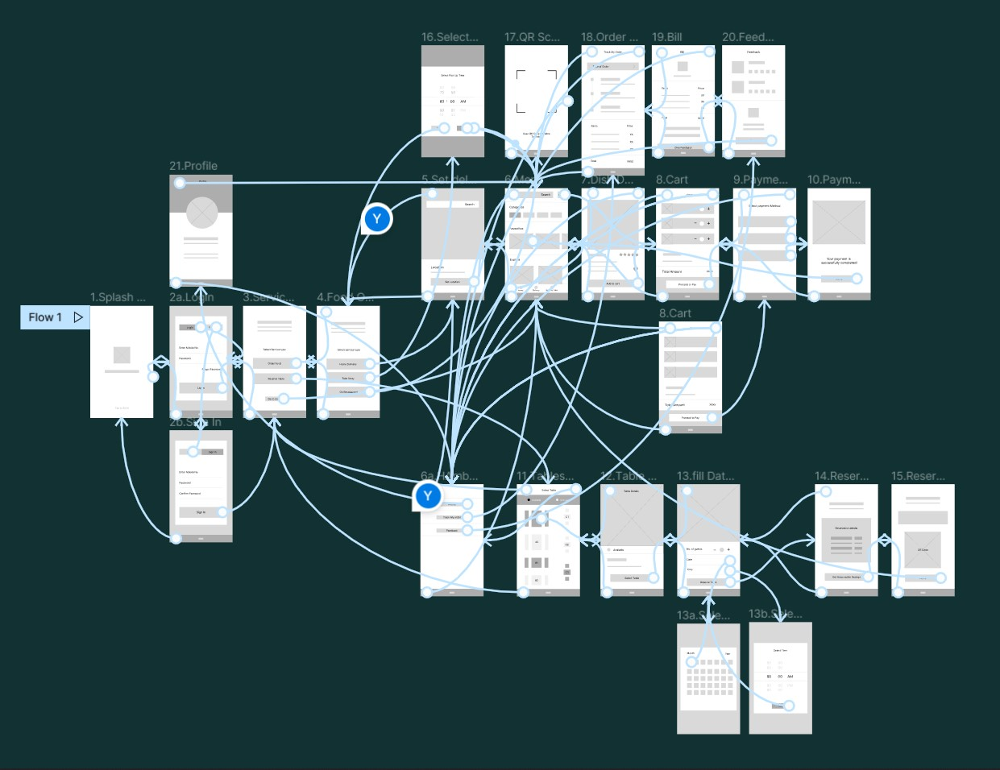
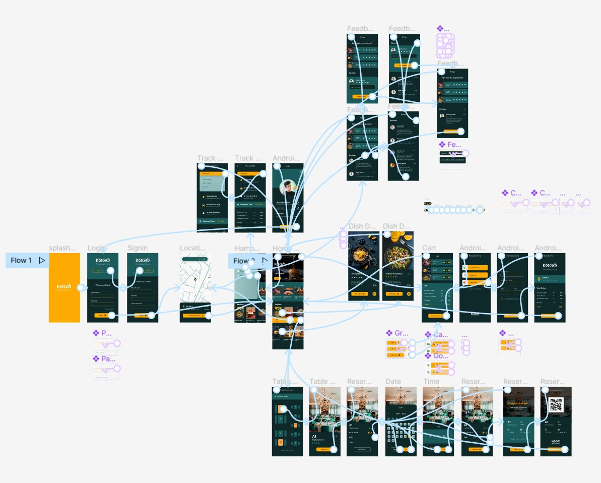

KOGO - App design & UX Case Study
Yash Chaudhari
-
The product
KOGO - a high-end restaurant located in Pune metropolitan area. KOGO strives to deliver a fresh and diverse range of food and a premium dine-in experience. KOGO targets customers with busy schedules or meeting place seekers and families for an exclusive experience.
-
Project duration
1 Month, June - July, 2022
-
The problem
People with ba usy schedule having lack of time to prepare meals and pre-reservation tables for meetings.
-
The goal
Design an app for KOGO - A high-end restaurant for customers to order premium, fresh meal, and reserve tables.
-
My role
UX Designer - designing an app for KOGO from conception to delivery.
-
Responsibilities
Conducting interviews, paper and digital wireframing, low and high-fidelity prototyping, conducting usability studies, accounting for accessibility, and iterating on designs.
User research summary
I conducted interviews and created empathy maps to understand the users I’m designing for and their needs. A primary user group identified through research was people with busy schedule & premium experience seeker people for meetings from nearby various industrial firms.
User pain points
-
Remote Booking
People with busy schedule have to go to the restaurant for a table reservation for a table.
-
Time
Working adults are too busy to spend time on meal preparation and grocery shopping.
-
IA
Pictures of dishes and restaurant not available in the menu.
Trouble in reading heavily text areas with fancy fonts.
User Persona
Persona Quote Pending!
Alisha Mehra
Alisha lives in Pune from last 2 years and work as an news editor at a news channel firm, with a well defined schedule at office. She became punctual in nature with such schedule. She belongs to a pure vegetarian family. She also take care of her health and hygiene. Goes to restaurants hangout with friends.
- Age: 25
- Education: MA
- Hometown: Pune, India
- Family: Live alone
- Occupation: Full-time News Editor
Problem Statement
Alisha Mehra is a 25 years old full-time news editor who needs to order fresh food because of a lack of time to shopping grocery and prepare food due to her busy job schedule.
Goals
- To pay with any payment method.
- To easily explore new dishes & enjoy fresh food.
- A way track my order.
- To order my favourite meal quickly.
- To complaint about bad service.
Frustrations
- Unavailability to pay with cash on delivery.
- App not showing estimated time for delivery, it wastes my time.
- Every time have to browse for same dish, no way to save it.
- Can not easily reach to customer support.
User journey map
Alisha’s user journey how KOGO app would be helpful for users like Alisha.

Paper wireframes
Sketching is the key step for me in designing anything. I designed 5 Ideas very quickly during brainstorming, and then from each designs, I picked up the elements according to users’ needs and convenience and structured them into a refined wireframe.
Digital wireframes
Digital wirefames 1
This is a wireframe for the app's home screen or menu screen containing different categories, a favorite section, a search field, a hamburger menu button containing additional features, and a cart button to direct access. The page also Contains images as per the user’s need.
Digital wirefames 2
The goal of this screen of the table reservation process is to reserve a table on desired date and time.
I designed the screen that provides an image of the table which the user is reserving remotely, fields to add date and time details, and a CTA button at the center bottom area of the screen for better accessibility.
Low-fidelity prototype
Using the digital wireframe I created a low fidelity Prototype. I made the primary user flow for ordering food & Table reservation so I can use it as the main tasks in a usability study.
Usability study
I conducted two rounds of usability studies. Findings from the first study helped guide the designs from wireframes to mockups. The second study used a high-fidelity prototype and revealed what aspects of the mockups needed refining.
Round 1
- Taking a long to start a new task
- No way to add favorites
- No way to add No. of Guests
- No way to add and remove Item
Round 2
- Taking long at the Rating stage
- No solution for forgetting the password
- Not showing units of prices.
Mockups
Mockup
After the second usability study, it revealed that typing the star rating took more time, and there was also no indication of how much they had to rate. I created a one-click star rating feature for a fast and easy rating process & also added CTA back to home to complete the process.
Mockup
The second round of usability study questioned what if an already existing user forget the password? So, as a solution, I added a forgot password button exactly near the password field so users can find it easily in case of password is forgotten.
Mockup
Another Finding from the second round of usability study was the units of the prices were unknown, so in refining the mockup phase I added a rupee symbol before prices on all screens who are including prices.

High-fidelity prototype
The final high-fidelity prototype presented cleaner user flows for ordering food, reserving table, and other features. It also meets user needs for a takeaway or delivery option and more customization.
Accessibility considerations
-
1
Used high contrast color scheme throughout the app for better readability for a wider range of users.
-
2
Included big CTA buttons with accent colors at the easily accessible area of the screen mobile with icons to easily understand the flow to complete tasks for all the users.
-
3
Used clear ad big images of dishes with details to deliver a clear picture of the meal to all the users
Impact
The app makes users feel like KOGO thinks about how to meet their needs and provide an authentic experience.
What did I learn?
During the process of designing an app, from user research to final design, I learned each and every step of the design process and the importance of each stage. Also closely experienced how usability studies and feedback impact design iterations. The whole designing journey developed new perspectives as a UX Designer.
“This app made my work task so easy, my office is far from KOGO and now I do not have to go there only for booking a table.”
_Quote from an early user
Next Steps
-
1
Taking feedback from users and analyzing the pain points users experienced have been effectively addressed.
-
2
Conduct more user experience research to find new areas of need for the next app version.
Thank you for your time reviewing my work on the KOGO app! If you’d like to see more or get in touch, my contact information is provided below.